2001年5月4号那天早上，美国人发现他们打不开白宫网站了。
而有20分钟，好不容易打开的人，看到的是右边这副景象：
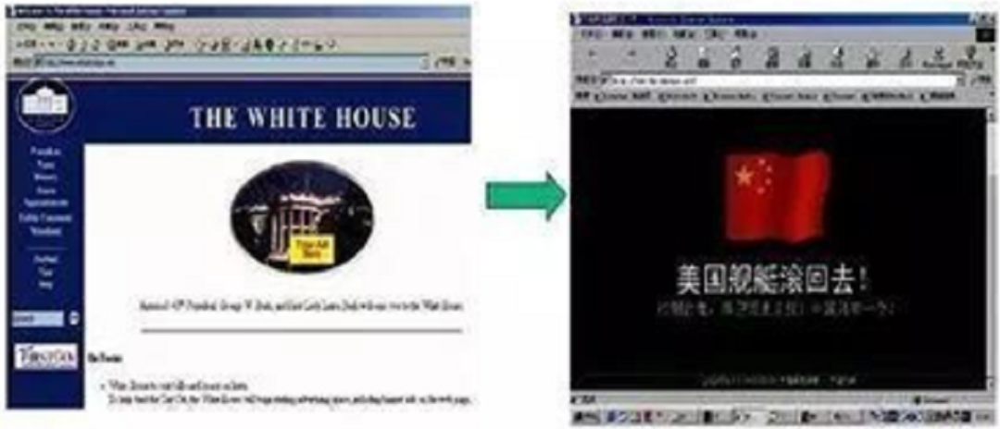
这不是什么恶作剧P的假图，这 就 是 白 宫 官 网 。
可能也是白宫历史上唯一一次，首页被人篡改得面目全非。
很显然，应该是中国黑客干的。
不过他不是一个人，而是八万中国人。
怎么可能呢？
当年中国能上网的电脑只有892万台，而1%的中国电脑竟然都在同一时间，用来攻击同一个网站？
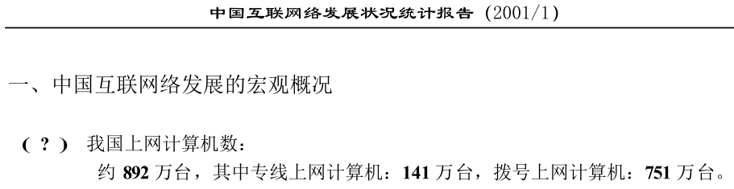
19年过去了，这是一群被遗忘的人，他们的名字叫“红客”。
他们为什么这么做？
因为那一年，美国从政府到民间，对中国的欺侮达到了一个顶峰——就像今天一样。
那年，距离中国驻南斯拉夫大使馆被炸，刚刚过去两年，中美撞机事件爆发，飞行员王伟壮烈牺牲。
美国国务卿鲍威尔说：“我们并没有做错什么，所以不能道歉！”
美国CNN主持人在节目里公然拿王伟烈士的名字玩梗，说他瞎了眼，飞机“走错路了”（Wang Wei - Wrong Way）。
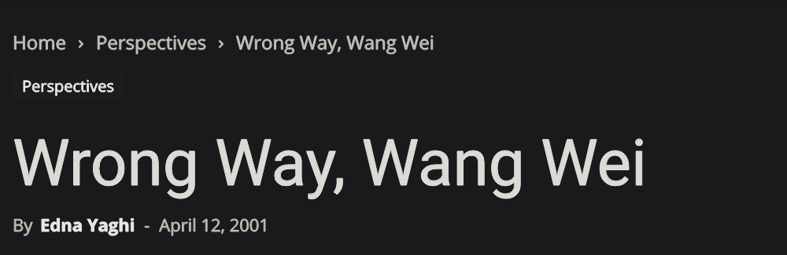
美国人率先黑掉了中国政府和民间1000+个重要网站，还在首页挂上淫秽图片和侮辱中国的字眼。
而红客攻陷白宫官网，就是在这样的背景下出手的。
很多人觉得国家间的“反制”是一件政府出面才能做的事，是一件操作复杂的事，是要出其不意打他个措手不及的事，
可是当年的红客事件，一点都没做到。
红客出击有政府背书吗？没有，全是民间自发的。
红客黑掉白宫官网，搞了什么特别复杂、高大上的木马病毒吗？没有，手段非常简单粗暴。
而更让人匪夷所思的是，美国人提前四五天就知道中国黑客要来搞事，并做好了防御准备，但白宫网站还是瘫痪了。
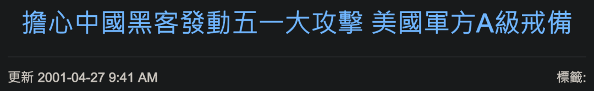
以当年中美互联网技术的实力对比，这怎么可能呢？
马尔克斯有部小说，叫《一桩事先张扬的谋杀案》。
而2001年的春天，那是一场事先张扬的中美黑客大战。
19年后的今天，它被很多国人遗忘，甚至更多人压根就不知道它的存在。
往事钩沉，不为国仇家恨，只为给今时今日做一面镜子。
今天的字节跳动该怎么做？今天的中国该怎么做？
或许后来被很多人看做“头脑一热”的红客，给了我们一个并不偏激的答案。
01
初啼
1998年5月，印尼首都雅加达的街道上很不平静。
一场由统治集团内部矛盾激化所引发的暴乱，逐渐演变成了针对华人的暴动。
一卡车又一卡车的暴徒进入华人区，高呼“宰了中国人，烧死他们，这些中国狗！”随后便开始打砸抢烧店铺和市场，一些华人在商业区被当场打死或遭到枪杀。
有人在光天化日之下的商业区强暴妇女，有人把华人妇女集中起来开展集体轮奸，有暴徒完事之后将华人女子一把推入熊熊燃烧的建筑物中。
暴徒说：“被强暴是应该的，因为是华人。”
每强奸一个华人女性，暴徒可以得到2万盾（当年约合人民币15-20元）的酬劳。
仅印尼首都雅加达，就有5000多家华人工厂、店铺、房屋、住宅被烧毁，华人妇女被强暴数量难以统计，近1200名华人被屠杀。
一些极端的印度反华分子还把杀害华人的照片发到网上。
严格来说，印尼华人不算中国人，是早年中国移民的后代。
但当消息传回国内，从官媒到民间，无数国人对印尼华人的惨痛遭遇感到怒发冲冠。
这其中，就包括一群初出茅庐的中国黑客。
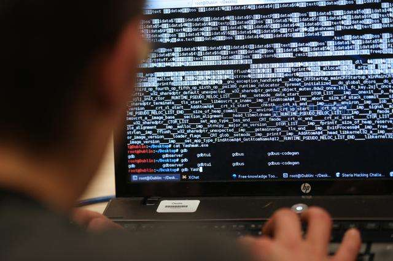
一个网名“David Chan”的黑客掀起了代号为“复仇之弹”的行动，随后印尼外交部等上百个网站遭到攻击破坏。
印尼政府公用邮箱遭到长达30个小时的邮件炸弹“集中轰炸”以至于完全瘫痪。
一个自称来自中科大的黑客“炽天使”攻入印尼政府网站，在主页上贴出了2000字的“黑客宣言”。
印尼负责网络安全的发言人说：“如果不是防空警报没响，我以为一定是中国对我们宣战了。”
那是中国“红客”第一次在国际上“亮相”。
1999年，印尼新任总统承诺，将废除印尼的反华条例。
没有人知道，红客对印尼网站的攻击在其中起到了多大作用，他们还需要更多机会来“证明”自己。
他们没有等太久。
1999年5月7号深夜（北京时间5月8号），三枚北约导弹连续袭击中国驻南斯拉夫大使馆主楼和大使官邸。
中国记者邵云环、许杏虎和朱颖当场牺牲，数十人受伤。
潘占林大使站在被毁的使馆废墟前愤怒地指出：“这是对中华人民共和国主权的粗暴侵犯！”
但北约军方发言人说，他们错拿了过时地图，“我们以为那里是南斯拉夫的军需局。”
中国各大高校学子义愤填膺，涌上街头，声嘶力竭地抗议北约暴行。
一道道横幅把人流切割成不规则的方阵，学生们高声喊着：“中国人，一起来！”
是时候，再次出手了。
5月9日深夜，一个临时组成的网上组织“中国黑客紧急会议中心”攻击了美国国会的相关站点（www.capweb.net），只用了短短5分钟，公布了国外将近250个站点的密码。
虽然他们马上撤回了密码，但大批愤怒的网民早已蜂拥而上，疯狂传播，把这些站点全部篡改，换上了“中国黑客”占领的主页，其中包括美国驻华使馆、美国内政部和能源部官网。
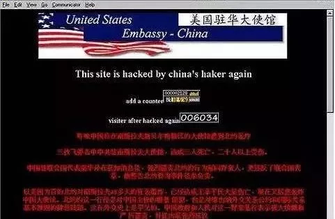
一位“中国黑客紧急会议中心”的成员说：这250个站点的密码，只是他们知道的极小一部分。
“我们成立的目的——抗议，让世人都能看清楚美国和北约的霸权心态和禽兽行为。”
“请公安部门放心，我们只是用自己代表全中国人民的心声的页面去替换北约军事站点的首页，我们不会删除或破坏他们的任何数据。”
“只要中国人民和中国政府的最终目的全面地无条件地一达到，我们自然解散。”
“但是现在，我们在行动！”
事后，美国政府严正声明，强烈谴责中国黑客侵犯美国网站的“暴行”，还约见中国驻美大使李肇星提出抗议。
结果，中国真的有一个黑客组织（www.antinato.com）声称对此事负责，他们说之所以轰炸美国网站（内务部和能源部），是因为他们以为“这是一座武器库”。
以彼之道，还施彼身。
新加坡《联合早报》的一篇报道形容这群人是“红旗下的黑客”，“红客”由此正式得名。
红客（honker），指的就是出于爱国，对那些在某些方面与我国对立的国家的网站进行入侵破坏的黑客。
不同于国外黑客的“无政府主义”，红客的政治主张极其鲜明：
“维护祖国统一，捍卫国家主权。”
“打击一切敌视我们国家的敌对分子。”
美国轰炸大使馆后的第二天，中国网络安全从业者苗得雨制作了中国第一个红客网站——“中国红客之祖国团结阵线”。
在红客的网站上，还引用了毛泽东青年时代的一句话：
“国家是我们的国家，人民是我们的人民，
我们不喊谁喊？我们不干谁干？”
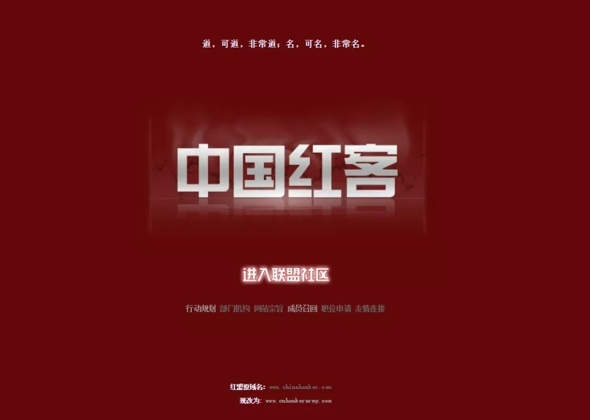
700多个日夜后，他们再一次忍无可忍地出手了。
而这一次，他们创造了历史。
02
进逼
“81192，这里是552和553，请您返航！”
“552，553，这里是81192，我已无法返航，你们继续前进！重复！你们继续前进！”
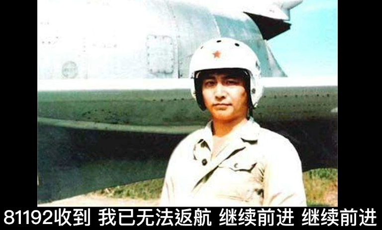
2001年4月1号，一架美国EP-3型侦察机闯入我国领空，中国海军航空兵迅速派出战机，进行跟踪拦截。
不料就在飞行员王伟奉命堵截途中，美国飞机突然大转向，以45°角撞向了王伟的战机。
这架歼8被彻底撞毁，王伟永远地消失在了茫茫大海当中。
王伟坠机后，中国10万军民不舍昼夜地搜寻了14个昼夜的搜寻，在南海展开了有史以来规模最大的搜救行动，却依然没能找到他。
而那架美国侦察机则摇摇晃晃地迫降在中国。
布什总统向中国飞行员的家人表示“祈祷”，没有道歉。
国务卿鲍威尔的话来说：“如果道歉的话，那么就不一样了，那我们就得负责任的。可我们并没有做错什么，所以不能道歉！”
CNN的主持人在节目里一边哈哈大笑，一边拿王伟的名字开涮（Wrong Way）。
中国政府坚持要求美国赔偿，但最后美国赔了34567.89元——一个随手一挥、充满侮辱性的数字。
美国众议院国际关系委员会主席亨利•海德叫嚣，中国在扣押美国24名机组人员做“人质”。
有人仿佛听到了他的“召唤”，从4月4号开始，美国黑客以所谓“中国扣押美国机组人质”为由，执行代号为“中国杀手”的破坏行动，率先对中国境内网站以“.cn”为后缀的网站展开大肆破坏，对超过350个中国网站进行“毁容”。
而他们所谓“出师有名”的真相是，美机迫降中国后，24名肇事美国飞行员被安排住在中国军官的宿舍里，精神状态和健康状况都很好。飞机后来还被送抵夏威夷的美军基地。
但美国黑客哪管这些，全球TOP 2的黑客组织PoizonBox领衔，不断教唆更多黑客团体加入，最终集结了Prophet、Acidklown、hackweiser和PrimeSuspectz等5大黑客团体，以及沙特、印度、巴西等国黑客，对中国境内网站展开疯狂攻击。
一个以涂改网页著称的美国黑客甚至说：
“所有的美国黑客们联合起来吧！
把中国的服务器全都搞砸！”
他们还特意开设了一个网站，域名：www.fuckchinese.com。
从4月4号开始，整个4月，全球每7起黑客事件，就有1起针对中国大陆。
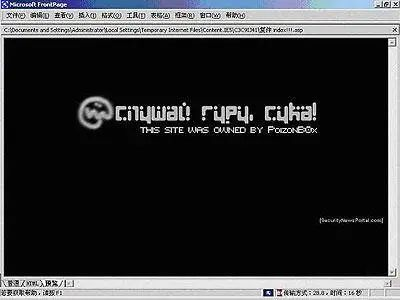
广东某政府网站4月17日凌晨遭到攻击后的官网画面
在所有被攻击的中国网站中，商业网站占54%，政府网站占12%，教育和科研网站占19%，其他网站占15%。
其中包括江西宜春政府官网、湖北武昌区政府信息网、中国科学院心理研究所、福建外贸信息网、中国青少年发展基金会等，有些网站首页还被挂上了淫秽色情图片。
国内为数不多的防火墙软件公司电话当月被打爆。
当时绝大多数中国人，上手摸到电脑的都不多，更不明白什么叫“网络安全”。
美国黑客对中国网站的入侵，几乎是势如破竹，如探囊取物。
他们在黑掉的中国网站上留言说：
“我们要对你们这些垃圾的政府网站和所有不设防的网站发动全面的网络战！”
"We are going for all-out cyber warfare on your gov.cn boxes and every other box that you fucks haven't secured!"
就在PoizonBox和同伙们在中国互联网上“所向披靡”的时候，在屏幕的另一端，22岁的中国青年小杨把这一切尽收眼底。
作为潜水员的他，正源源不断地把外网上获取到的黑客情报，实时发送到中国的一个个红客聊天室里。
如果恶棍欺人太甚，你该怎么办？
来而不往，非礼也！
03
反攻!
以斗争求团结则团结存，
以退让求团结则团结亡。
——毛泽东
“19年前，ADSL拨号几十Kb的网速，我们扛着延迟，连续通宵几个晚上，就为了在美国网站上插红旗，一晃20几年，这段故事已经不知道跟谁说了。”当年参加过那场“战争”的黑客老K这样回忆道。
整个4月，中国红客们并没有坐以待毙，在美国搞了我们350个网站的同时，我们也黑进对方37个网站。
早在4月19日，美国《连线》率先闻到味，在一篇分析中提到，中国的黑客们计划在“五一”期间发动一次七天战役，全面袭击美国网站。
此时，中国的黑客团体正迅速集结，广发英雄帖招兵买马，有个组织在短短12天内，从20余人的规模迅速扩大到上千人。
而在红客组织内部，由网络安全公司顾问、高级技术人员组成的核心成员，一边仔细筛选目标网站IP，同时制定作战武器，编写教材，一边以老带新，对新人按照特长、资质进行分组。
中国红客联盟，联合中联绿盟、中国鹰派联盟、中国蓝客联盟、中国黑客联盟等几大组织，以及境外支持我方的日本、韩国等国黑客，整装待发。
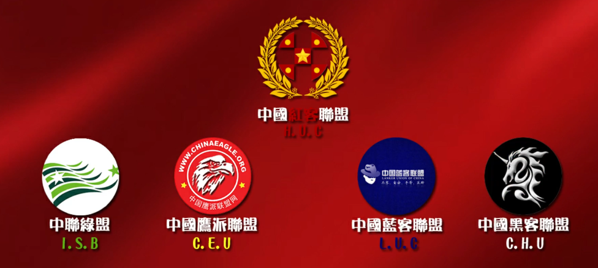
他们并不知道，即将拉开大幕的，是人类互联网历史上最大一次黑客对战，其对战组织之严密、参加人数之众、被黑网站之多、持续时间之长，都将史无前例。
4月25号，被惊动的美国太平洋司令部针对中国黑客，把信息系统面临的威胁等级从一般提升至A级（最高级别为D级，届时整个军方系统将全部关闭）。
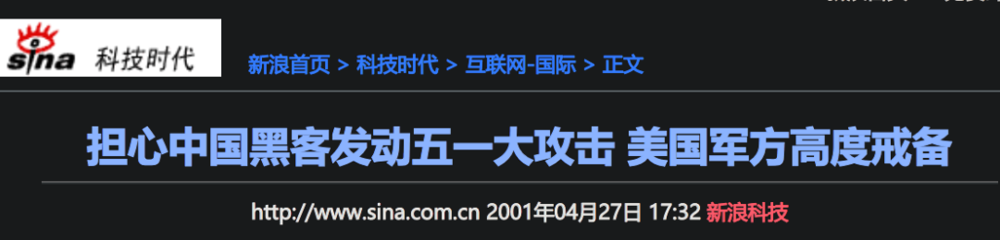
但美国人没想到，短短三天之后，“开胃菜”就上桌了。
4月28号，美国劳工部官网（www.dol.gov）遭到入侵，随后陆陆续续一些网站的首页突然被换成了五星红旗+王伟烈士的照片。
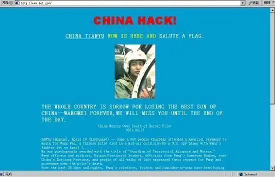
美国劳工部官网
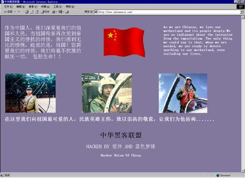
有的黑客还在网页上加入了中华人民共和国国歌，打开页面，就有雄壮的《义勇军进行曲》奏起。
这样的小打小闹，不足以让美国黑客对中国网站罢手。
于是4月30日晚19时19分，经过加密的红客联盟动员大会吹响了总攻的号角：
主持人Lion：大家好，今天召集大家来，主要是讨论发动对美国网络反击战的相关问题，并发布反击动员令。
自从中美撞机事件发生以来，全国人民对美国政府的愤慨已不可抑制，然而至今美国政府仍不肯认错，没有给中国人民一个满意的答复。
作为一个爱好和平的技术组织，我们“红盟”的全体成员对美国的态度十分失望，并于今日发布“五一”对美网络反击战的动员令。
目标：美国网站
命令发布者：“红盟”负责人Lion
行动口号：化我们的愤怒为力量
攻击方法：自由攻击
注意事项：
1、“红盟”所有参加此次进攻行动的人必须使用“红盟”统一规定的行动黑页。
2、“红盟”的核心成员主要负责对美国政府、军队、大型商业网站的攻击。
3、核心成员如果发现漏洞比较明显的小型网站，建议将其公布在“红盟”论坛上，供给初级成员练习。
今晚9时，开始打响我们这次对美国的网络反击战。
我们的网络不能任人进入！我们的尊严不能任人践踏！我们要告诉他们：中国人不是好惹的！
今晚的会议发言到此结束，大家现在开始准备吧！
但是会议刚一结束，很多红客不知道怎么下手，场面一度混乱，Lion当即决定，行动按省份为小组进行，各省网友抱团配合作战。
一直到5月2号，战况并不乐观，红客联盟宣布攻下美国92个站点之时，国内统计被黑站点已接近600个。
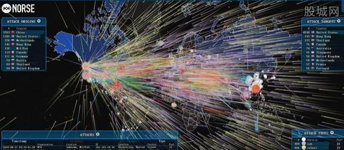
美国人发现：诶，中国人就是涂涂改改，手段很单一啊？他们在想，中国人是不是还在“憋大招”，准备“五四青年节”当天才放出来？
没错，但他们没有想到，我们的大招，是具有中国特色的。
美国当地5月4日上午9点到11点15分（北京时间晚9点到11点15分），美国白宫网站因遭到黑客袭击，被迫关闭了两个多小时，达到了整场黑客大战的高潮。
原本严防死守黑客攻击的白宫没想到，白宫10000M的带宽，竟然被中国人堵了个水泄不通。
80000红客浩浩荡荡，从全国铺天盖地向同一个IP地址奔涌而来。
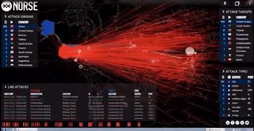
没错，我们的大招就是——人海战术。
那一天，普通网民阿瑞晚上8点多打开电脑，登陆白宫官网，发现一切正常。
他打开了一个文件夹，找到了从红客网站上领取的“弹药”——DDOS（分布式拒绝服务攻击）工具。
他打开程序，填上白宫的IP和端口，设定好信息包数量和发送时间间隔，单击“确定”。
北京时间晚21点刚过，阿瑞再次尝试登陆白宫官网：“该页无法显示！”成功了！”
“然后我让程序自动运行着，自己就睡觉去了。”
而另一头，焦头烂额的白宫网络服务中心，在短短几十分钟内收到数百个投诉电话。
白宫网站的新闻负责人吉米说：“大量数据的同时涌入，堵塞了白宫与其互联网服务提供商(ISP)的连接通道。”
白宫网站同时接到大量要求服务的请求，以至于合法用户无法登录该网站。
而更让美国人没有想到的是，有整整20分钟，白宫官网被挂上了中国的五星红旗。
原本按美国严密的防御措施，红客是做不到这一点的，但中国红客出其不意，通过二进制编码0101一字不差地把包括五星红旗在内的网页修改内容背了下来，然后通过TCP（传输控制协议）修改了白宫网页。
没人想到竟然会有人用纯二进制编程，自然就没人准备对应的防御手段。
而做到这一点的，正是中国红客联盟的创始人林勇（Lion）。
完事了吗？还没有。
5月8号，中国驻南斯拉夫大使馆被炸两周年纪念日，中国红客再次出征，攻下5个美国网站，听起来太少了，对吗？
但这5个网站分别是：
美国财政部官网
美国海岸警卫队网站
美国海军资源网站
美国海军改革网站
美国海军后勤服务网站
后来有人评论说，红客当年太菜了，只会人海战术+涂改页面，没有对网站的DOS进行破坏。
不是不会，而是对等报复。
自始至终，中国黑客都本着“攻击但不破坏，示威但不挑衅”的原则进行攻击。
当时的中国，光顶级的白帽黑客（精通网站防御）有十几人，他们完全可以对美国公众网站进行大肆的深度破坏。
但他们没有这么做。
所有中国红客团体都主动自我约束，“中华黑客联盟”将行动限制在只涂改页面。
“中国红客联盟”在纪律声明中规定，成员不得无端攻击普通用户和合法网站，违者从联盟名单中剔除。
而中国红客的战果，就是把五星红旗插遍美国主要网站的每个角落：美国联邦调查局（FBI）、美国航空航天局（NASA）、美国国会、《纽约时报》、《洛杉矶时报》、美国有线新闻网（CNN）……
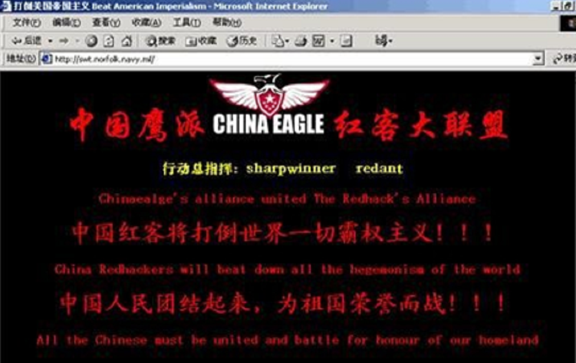
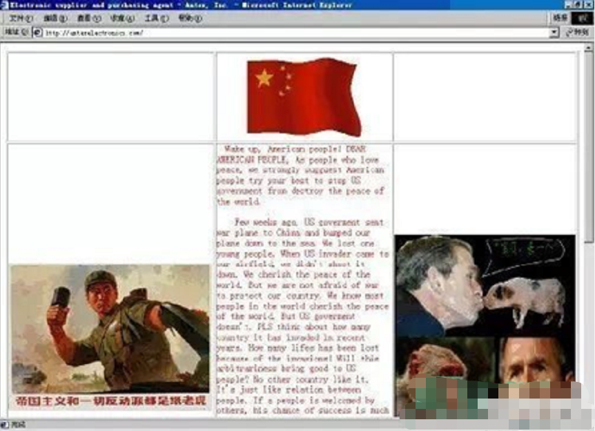
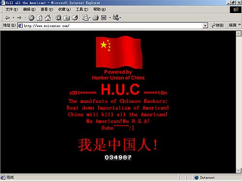
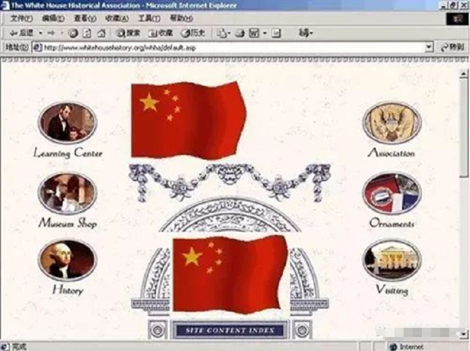
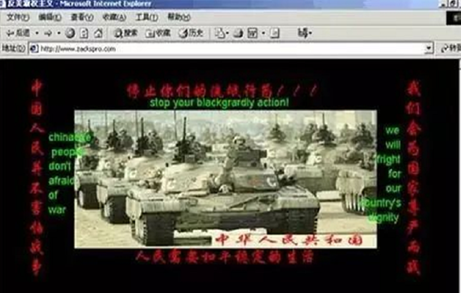
就在所有美国人都以为红客简直要上天的时候，那一天，他们在美国海军资源网站发出了一则声明：
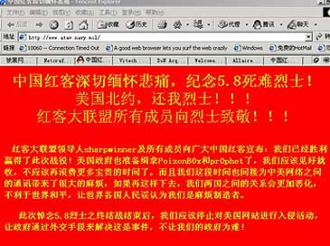
美国海军资源网站
“红客大联盟领导人及所有成员向广大中国红客宣布，我们已经胜利赢得了此次战役！美国政府也准备缉拿PoizonBox了，我们应该见好就收。”
“而且我们这段时间也间接为中美网络之间的通讯带来了很大的麻烦，悼念5.8烈士之终结战结束后，我们应该停止对美国网站进行入侵活动，让政府通过外交手段来解决这一事件，不让我们的政府为难！”
就这样，中国红客如惊涛汹涌而来，如潮水奔流而去。
十步杀一人，千里不留行。
事了拂衣去，深藏身与名。
美国网络安全顾问杰瑞·弗里塞评论说：
“中国黑客之间的默契度令人惊讶，他们的组织非常有序，令人称奇，较之西方黑客也更加严密。”
他们聚，是一团火；
他们散，是满天星。
据统计，中国黑客攻破美国网站1600多个，其中900多个政府和军方网站。
而同时，被美国黑客攻陷的中国网站也高达1100多个，主要网站600多个。
从数量上看，我们赢了；但在国内，我们的很多重要网站也遭到严重破坏，我们也付出了很大的代价。
从那天开始，更多的中国人，更多的中国企业，知道了一个叫“网络安全”的概念，也是从那天起，中国人开始一砖一瓦地，在比特世界里筑起自己的铜墙铁壁。
或许只是一种巧合，就在红客攻下美国海军网站的第二天，中国教育部批准了武汉大学计算机学院增设信息安全本科专业，当年秋季全国招生，那是当时全国高校唯一一个信息安全本科专业。
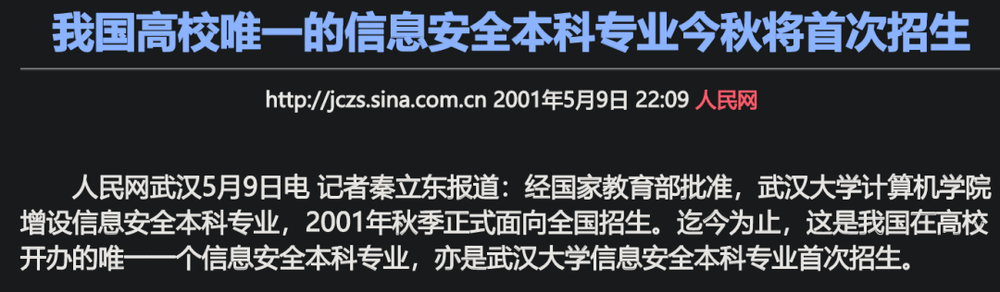
而到今天，全中国高校里的“红客”，多得已经可以组团比赛了。
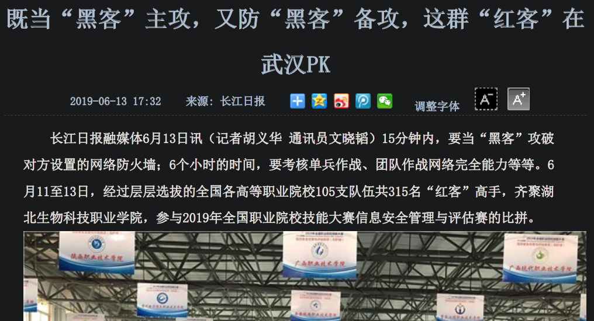
平心而论，红客的行为不是每一次都能赢得国人的“满堂彩”，甚至2004年底红客联盟的解散，也和他们后来频频出手的过激行为有关。
但他们在中美黑客大战中的表现，却给今天出海遭遇不公打击的中国企业，上了很好地一课。
尾声
有人说，都过去19年了，你讲这个故事干什么？
白宫官网早更新换代多少回了，你还想黑他一把出出气咋的？
要说清楚这个故事的意义，我想讲两个很短很短的小故事。
1938年9月30日，为了避免战争，英国首相张伯伦刚跟德国签署完《慕尼黑协定》，把捷克斯洛伐克的苏台德地区拱手送给德国后，从慕尼黑返回伦敦。
走下飞机的他，面对充满期待的大众，激动地挥舞着一张纸，满怀信心地宣称，他带回了“一个时代的和平”。
他挥舞的那张纸，就是有希特勒签名的承诺书。
1939年3月，希特勒食言，吞并了捷克斯洛伐克全境。
之后爆发的二战，把张伯伦和那张纸永远地钉在了历史的耻辱柱上。
还有另外一个故事。
美国前总统尼克松在回忆录《领导者》中写道，有一次他跟赫鲁晓夫会谈，赫鲁晓夫问他：美国要什么？
尼克松回忆说，我本来想说“和平”，但是我一想，如果我说和平，赫鲁晓夫就可以说：向我投降，我给你和平。
所以尼克松想了想说：我们要的是有尊严的和平。
19年前，红客想要什么？
今天，出海的中国企业想要什么？
中国想要什么？
我们要的，是有尊严的和平。
如果尊严与和平不可兼得，我们用对等反制求尊严，我们用对等反制赢和平。
每一个时代，面对每一种霸凌与攻击，反制手段都必然不同。
当年红客的反制手段如今早已过时，而攻击我国互联网的美国黑客，已经从PoizonBox变成了美国总统本人。
但无论时代怎样变迁，我们至少清楚一点：面对霸权，没有手段、没有手腕的人，不足以谈和平。
面对强权与不公，每一个时代的中国人，都同气连枝。
就像复旦大学国际关系教授沈逸老师说的：
我们该如何反制？
可不可以先让“不可靠实体清单”落地，
让损害了中国利益的企业支付代价？
对中国来说，这是一个艰难的时刻；
对爱好和平的人来说，这是一个艰难的时刻。
但任何恶意伤害中国企业合法利益的行为，
都应该得到反制，
这是一个基本的态度。
你愿不愿意抗争？
你如何恰如其分地去抗争
表达出你的不满？
最最基本地告诉大家：
你，被不公平地针对了
没错，这是这个世界上唯一的超级大国
有时候他真耍起流氓来
让你觉得很没有办法
但没有办法不代表说
你就要放弃抵抗
因为放弃抵抗之后
就真的没有然后
在中美撞机事件发生后，一个网友过客（bluemuse）在网上留下了这样一段话，19年后，他依然说出了多数国人的心声：
只有美国干出导弹攻击别国使馆的荒唐事；
也只有美国军用飞机能擅自降落他国领土。
而这两件事却都和我们中国有关，为什么？
因为我们中国正在强大。
我不怕制裁，因为我是中国人；
我不怕战争，因为我是中国人；
我更不怕明目张胆、昭然若揭的侵略，
因为我是中国人。
德邦